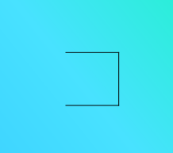

TBC
TBC
The operators for generic 2-D L-Systems are F, f, +, -, [, and ]. In this application, you will find that additional operators are also usable. For instance, ^ and v are also operators. A simple table below describes the function of the different operators.
F |
Draw a line |
f |
Move forward |
+ |
Turn left |
- |
Turn right |
[ |
Push current position on stack |
] |
Pop position off stack and go to that position |
^ |
Increase line width |
v |
Decrease line width |
How can these be used?
Well, for example, here is a possible sequence of operations:
F+F+F
This will draw a line, turn to the left, draw a line, turn to the left, and the draw a third line. The result that you get with angle = 90°.

The basis for L-Systems are grammars. These are a collection of context-free productions which serve as the "rules" for the L-System. They come in the form:
X -> { sequence }
An example would be:
X -> { F+F+F }
This replaces all instance of X with the right hand side of the production which is within the {}'s. For instance, if a particular sequence as follows was:
f-X-f
The rule for X would replace the X with its defined sequence so that it would represent:
f-F+F+F-f
Now what if we we use a rule within a rule such as with:
X -> { [X+X+X] }
It appears as if you would end up having an infinitely long string.
X -> { [X+X+X]+[X+X+X]+[X+X+X] }
X -> { [[X+X+X]+[X+X+X]+[X+X+X]]+[[X+X+X]+[X+X+X]+[X+X+X]]+[[X+X+X]+[X+X+X]+[X+X+X]] }
...
How do we know how may times to expand this production? Well that depends on a parameter, n, which determines how many times we exapnd this production. After the last expansion, the key for the rule, in this case "X," is replaced with F.
For instance, if n = 1,
X -> { [F+F+F] }
If n = 2,
X -> { [X+X+X]+[X+X+X]+[X+X+X] }
etc...
Now what if you want to do something more complicated, say using two rules that use each other?
A -> { +B-A-B }
B -> { -A+B+A }
This is perfectly valid in an L-System and in this application.
TBC
TBC
Created by Jeff Manzione. If you have any questions or comments, please email me at jeff@jeffreymanzione.com.